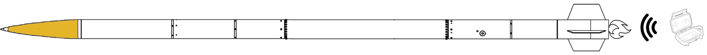
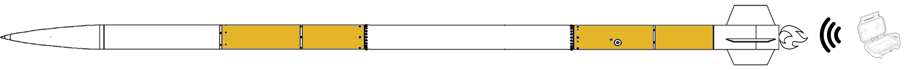
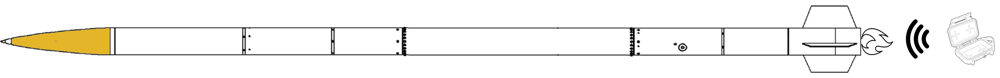
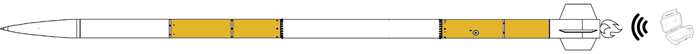
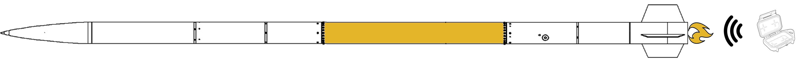
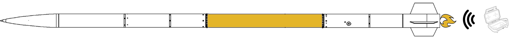

Our rocket consists of many interacting subsystems, each of which handles certain aspects of the rocket's testing, launch, and recovery. We cover a huge range of disciplines in the functionality of the rocket, and we're always open to incorporating more!
 



 



AIRFRAME
RECOVERY
PAYLOAD
PROPULSION
ROCKETCAN
DAQ
RLCS/OPS
The airframe consists of the outer structure of the rocket. As the part of the rocket that withstands various forces throughout the entirety of the flight, a strong and aerodynamic airframe is required to optimize the performance of our transonic rocket. As of 2017, the team has been expanding its knowledge of composites by manufacturing its own fibreglass and carbon fibre components using vacuum bag hand layup processes.
Prior to incorporating lighter composite parts, most of the rocket was fabricated out of heavy aluminum or steel components.
Want to get involved? This is what we're working on right now:
Recovery is the phase of the rocket's flight from after apogee (the maximum altitude) to landing. After flight our rocket should be in a condition in which it could be flown again. To achieve this, we employ a dual parachute system deployed by pyrotechnics and controlled by redundant electronics. Traditionally our altimeters deploy a small drogue parachute at apogee, followed by our large main parachute at 1500 ft above the ground. The rocket's location is tracked by two onboard GPS units and the location is received by a handheld unit to help find the rocket after flight. All of our hardware and electronics must take as little mass and space as possible so as to not impact the performance of the rocket drastically. They are typically located in the topmost section of the rocket to aid parachute deployment sequence.
Ideally, we try to optimize our design firstly for simplicity and reliability, and secondly for cost, weight, and space savings.
Hardware:
Electrical:
We have had partial successes with our recovery system since VIDAR III in 2017 (in previous years, the rocket had never reached the recovery phase).
Optimizing all of our hardware to minimize weight.
Experimental reefing parachute system to only require one parachute to be flown. This would reduce the weight and footprint of the rocket dramatically.
Putting together a test program with a local wind tunnel facility to characterize our existing parachutes and test the reefing system.
Implementing a remote arming system to simplify launch operations.
Developing and running thorough ground tests to mimic flight conditions as closely as possible.
The payload is the cargo of the rocket. Every year the team designs a new scientific experiment to collect data during the flight of the rocket, with a focus on high-altitude, high-acceleration or microgravity research. The goal of the payload project is to design a competitive experiment that can be submitted to the Space Dynamics Laboratory Payload Challenge at IREC while engaging an interdisciplinary group of students that will be tomorrow’s scientists and engineers.
In 2018, the team launched its first functional payload at IREC which consisted of a sensor fusion package that gathered data during the flight. In 2019, the team launched a 3D-printed parts experiment that tested the viability of integrating 3D-printed parts as structural components. Also in 2019, the team participated in the SEDS-Canada’s CAN-RGX flight campaign with an experiment that looked at the effects of magnetic ferrofluid solutions in microgravity.
The plan Payload 2021 is to conduct a materials analysis of metal oxide conformal coatings and BNNT composites during the flight of the rocket to determine the viability of these materials as structural and protective shielding elements in spacecraft. In addition, a set of radiation detectors are being developed to measure the atmospheric secondary radiation that permeates into the rocket and to determine the radiation shielding abilities of these materials. All of this will be housed in a redesigned CubeSat optimized to be easy to fabricate and modular for future payload experiments.
Propulsion is the system that makes the rocket go up. The current engine assembly, Kismet, is composed of a few different subsystems that each work together to produce thrust. The engine is a hybrid, meaning a solid fuel and a liquid oxidizer that allows the fuel to burn. We use a hydroxyl-terminated polybutadiene / nitrous oxide combo.
RocketCAN is the system of boards distributed throughout the rocket and linked through a CAN bus that are responsible for all onboard electrical functionality. Each board has a specific function such as radio transmission of telemetry, control of valves, and gathering sensor data. All of the boards and software have been entirely designed by members of the rocketry team, including the custom CAN library that the system is based on.
RocketCAN is easily adaptable and can consist of whatever boards are required by the specific application. The following is a list of the current CAN boards:
| Board | Description |
|---|---|
| Radio Board | Handles short-range radio communications and can depower the rest of the CAN bus to save power. |
| Live Telemetry | An improved version of radio board that allows for long-range communication, and therefore the transmission of live telemetry data throughout flight. |
| Injector Board | Designed to control the rocket’s injector valve, this CAN board is a high powered DC motor controller. |
| Vent Board | Designed to control a solenoid vent valve, this CAN board allows a medium current device to be powered on and off. |
| Fill Sensing | This board is designed to read from a series of up to 14 hall effect sensors in order to detect the fill level of the oxidizer tank. |
| Logger Board | This small board is responsible for logging all CAN messages to an SD card. |
| Mini Sensor | This small board features an accelerometer, gyro, magnetometer, and connectors for a temperature sensor and pressure transducer to measure data about the rocket’s performance. |
| GPS Board | This board uses a GPS to relay the rocket’s location to the CAN bus at all times. |
| Remote Arming | This large board allows the two altimeters that control the recovery system to be powered on and off via commands from the CAN bus. It also collects the rocket’s current altitude according to one of the altimeters and data about the state of the recovery system, ensuring that the recovery system is completely functional before launch. |
| USB Debug | This board allows CAN messages to be printed and sent over USB in order to help develop new hardware and software. |
The 2018 rocket, UXO, featured two large flight computers as its means of electrical control. This caused a number of issues if there was a single component failure, requiring the entire flight computer to be replaced. RocketCAN was developed for the 2019 rocket, Shark of the Sky, in order to address these issues, and to allow for more expandability.
The software for some of the newest boards is still being completed, and there are new boards currently being developed.
DAQ, data acquisition, is the system through which engine data is recorded during cold flow and static fire tests. We obtain, monitor and log data from the various sensors attached to the rocket, including load cells, pressure transducers, and thermistors. This subsystem covers the entire chain from calibrating the sensors to connecting the various cables and wires to writing the computer code to process the data. Although DAQ is mostly used during engine tests in Waterloo, a version of the system travels to competition along with the rocket. It is used together with RLCS to provide live data during the launch.
Prior to the current setup, all tests conducted in Waterloo were run using a minimal host of load and pressure sensors. These were routed into a PCB provided by National Instruments to monitor the test data before the development of the team’s custom DAQ board.
A wireless long-distance DAQ is currently being investigated. It would allow for more freedom during tests and have the potential to be transported to different locations. Another goal for DAQ is to optimize the system to minimize noise and receive data with higher resolution.
RLCS, the Remote Launch Control System, is responsible for allowing remote control of the ground based plumbing, and enabling communication between Mission Control and the rocket’s on board flight computers. This means that it allows the rocket to be fuelled and launched remotely and from a safe distance. Our team also has set operations procedures that are carried out using RLCS.
RLCS consists of 2 primary components: the client and tower side boxes. The client side box consists of a display and a bank of switches that allow the operator to see the state of and control the rocket. It uses a long range Xbee radio to communicate with the towerside box, and is powered by an Arduino Mega. The tower side box is responsible for the electrical control of the ground systems. It contains a series of custom PCBs that allow for the control of motorized valves that control the flow of propellant, as well as provide data acquisition from sensors in the plumbing system. It also features a pair of radios, one of which communicates with the tower side box, and the other of which relays commands to the rocket’s onboard systems.
As our rockets have become larger, and as we focused more on safety, we required a remote system for controlling our rockets. The initial RLCS consisted of four or five different boxes, and was far from robust. The second version operated as described above and was almost completely redesigned, with a major emphasis being placed on robustness, and has successfully been used for three years, including two launches and countless tests.
A third version of RLCS is nearing completion. This version is focused on streamlining the design, and includes redesigns of all the custom PCBs to create a system that can be easily expanded to handle bigger, more complex rockets.
In terms of operations, we're currently working on our operations simulator software, which runs a realistic simulation of our operations procedure on a virtual model of our systems fill setup. You can check out our repository here. A brief overview of our software looks like this:
The plumbing setup we use to fill our rocket with its prerequisite chemicals is represented by a graph using Networkx. We use this library in combination with an organic, home-grown algorithm to simulate and monitor pressure at any point in the graph through time.
Our visualization software uses an optimization library to determine a layout for the systems graph, which is then displayed by the UI.
The UI is done in Qt, and interfaces with the rest of our (Python) code to control the plumbing engine.
The components and engine structure are read in by our plumbing description language parser, which interprets a YAML-like plumbing description language to create the plumbing system.
Procedures can be specified with our procedures description language. Our procedures parser interprets the provided PDL, which enables automatic navigation of a specific set of actions.